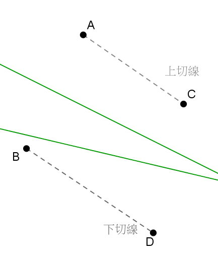
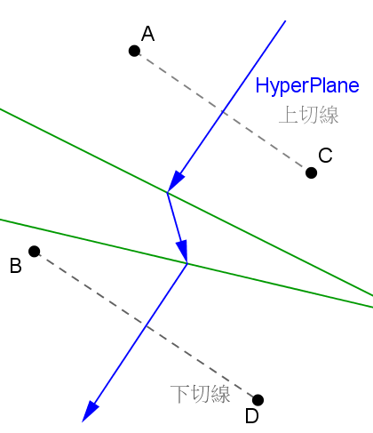

在寫多點的Case前，雖然看得懂投影片中求 Voronoi Diagram 的演算法，但要轉換成程式實在沒有一點頭緒，於是就先整理整個流程，並寫寫看虛擬碼來釐清思緒：
演算法
- 切割：將座標點排序後，把所有座標點分割成左右兩半
- 求 Voronoi Diagram：將左右兩部分，分別求出Voronoi Diagram
- 求上下切線：求出全部點的Convex Hull，找出橫跨左右兩部分的邊，即為上下切線
- 求 Hyper Plane：由一切線做中垂當進入點，撞到VD則轉彎，轉彎的方向如圖所示，最後由另一切線離開
- 消線：看HP往哪個方向轉，就往哪個方向的VD消掉
虛擬碼
edgeList Voronoi(PointList)
{
If(PointList.Count == 1)
return;
else if(PointList.Count == 2)
result = Voronoi_two(PointList);
else if(PointList.Count == 3)
result = Voronoi_three(PointList);
else if(PointList.Count > 3)
{
Divide(PointList, Point_Left, Point_Right);
vl = Voronoi(Point_Left);
vr = Voronoi(Point_Right);
result = Merge(vl, vr);
}
return result;
}
寫完後發現對整個流程有比較清楚，如果之前三個點以下的Case有寫好，就可以直接拿來用，於是就開始著手第一個Divide的功能。
Divide
其實就先將座標點先依X軸再依Y軸排序後，再將索引小於座標點總數除以2的點，分配到Point_Left，其餘分配到Point_Right就完成了。
之後分別對左右兩部分的點求Voronoi Diagram，進入遞迴的部分，最後一步就是將左右兩半部的圖Merge起來。
Merge
第一步要做的就是找出上切線及下切線，作為下一步找Hyper Plane 的進入點及離開點。而切線的找法就是畫出整個的Convex Hull，然後逐一掃瞄Convex Hull上鄰近的兩個點，當兩個點分別屬於左右半部的點，該線段即為我們要找的切線。找Convex Hull 的演算法，我是參考演算法筆記的Jarvis' March演算法去做修改，因為在有共線的情況下，共線上的點並不屬於Convex Hull的點，但這樣最後找出來的上下切線就會有誤，所以就必須修改Convex Hull的演算法，想辦法讓共線上的點也能一併加入。Jarvis' March演算法是先從凸包上一點開始做起，然後掃描每個點，找旋轉角度最大或是共線時距離最遠的點，作為下個要連接的點。那要共線時中間的點也要連接，第一個想法就是把共線時找最遠的點改成找最近的點，但如果是一列漸遠的點，這樣搜尋時找最近點時，就有可能會往回找，所以第二個想法就是要標記走過的點。但還有一種情況是當所有的點都是共線時，必須讓Convex Hull再原路折回來，才能找到對的切線，所以走訪過所有點後，如果判定全部點共線，就清空走訪的紀錄，往回搜尋，但我在這邊使用偷懶的作法，只要判定全部共線，就直接複製一份已經找出的Convex Hull點，倒著加入Convex Hull，然後起始點不加即可得到相同結果。

Hyper Plane
可以想成Hyper Plane是由很多線段的中垂線連接而成，那第一條Hyper Plane其實就是一切線的中垂線，將中垂線由圖形外的無窮遠處往圖形方向畫，撞到Voronoi Diagram就要轉彎，「撞到」的意思就是判斷兩線段有沒有交點，可以參考演算法筆記的做法，「轉彎」就是必須找下一個線段的中垂線，那麼就可以想像成有一條掃描線，掃描線一開始等於切線，撞到Voronoi Diagram後就要移動掃描線，那麼要如何移動掃描線？我是依照投影片的做法，一次只會移動掃描線段的其中一點，而移動的點就是每次撞到的Voronoi Diagram所平分的兩點。因為在作三點Case時還沒考慮到這個，所以就去Edge的資料結構新增這兩點的資訊，並在求Voronoi Diagram時順便加入這兩點資訊，其實比我想像中的還快，沒有動到太多原本寫的程式。能移動掃描線後，就直接從上一條Hyper Plane的轉彎點繼續畫，再去尋找下個撞到的Voronoi Diagram，這種接著畫Hyper Plane做法，最後就不用再另外消Hyper Plane，我是覺得比較方便也比較直覺。最後Hyper Plane就會由另一切線離開圖形。

消線
我是以Hyper Plane撞到Voronoi Diagram後，轉彎的方向來判斷，以轉彎前的線段(H1H2)和轉彎後的線段(H1H3)求外積，若為逆時針旋轉，則將該方向的Voronoi Diagram線消掉(H1H2與H1P作外積也為逆時針)，消掉的意思就是將該側線段的座標，更新為轉彎的那點座標，即可達到消線的目的。在求Hyper Plane時就可以先將有撞到的線段記錄下來，在消線時就可以只掃描這幾條線段即可。
以上作法應該就可以解決所有四個點的Case，但如果針對多點，由這個網站前面的範例就可以看到，左右半部超出Hyper Plane的線段不僅限於一條無限延伸的線，有可能左半部Voronoi Diagram的交點位於右半部，如此每次要消的線段就不只一條，還要繼續搜尋消掉的線有沒有延伸下去的線段，有的話就都要刪除，但後來因為時間關係，加上還沒想出把所有延伸線段都刪除的方法，我只能消掉原本就要消的線，和他延伸的第一條線，所以在多點時的某些Case還是可以很明顯地看到有沒消掉的線，是比較可惜的地方。
特殊情況
另外還有些比較難發現，也不一定會遇到的問題，就是「誤差」問題。如果座標是用浮點數去存，只要經過除法或乘法運算，小數點就有可能產生誤差，即使妳的浮點數存的看起來像整數（Ex: 120.00, 25.00…），所以在經過求兩線段的交點公式後，就有機率產生誤差，造成有時候求出兩線段的交點，但該交點卻不在兩線段上。若以我上面的作法來解四個點的Case，會遇到誤差的地方只有四個點圍成正方形的時候，我目前遇到誤差的解法都是再想其他方法，盡量避免出現「計算出來的點和另一點是否重疊」，或是「計算出來的點是否在某線段上」等判斷，網路上大部分的做法就是去允許誤差，但允許誤差的範圍就很重要，如果範圍太大，那原本輸入的點座標若有兩個很靠近的點，程式就會視為同一點，造成結果不如預期。
 (Open)：開啟檔案
(Open)：開啟檔案 (Add)：加入指定座標點
(Add)：加入指定座標點